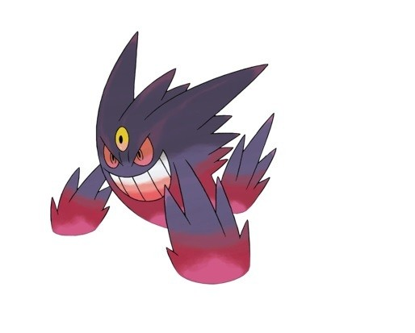
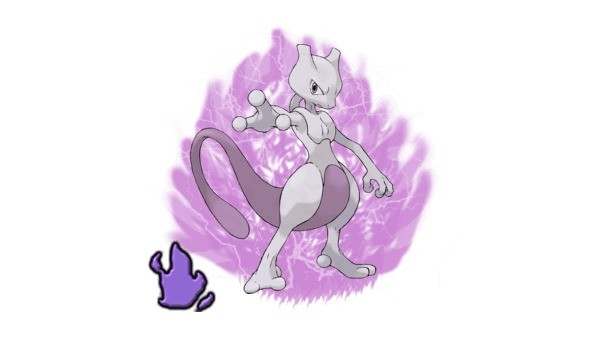

Pokémon o jogo mais curtido
Desde a entrada dos pokémons Shadow (Sombrosos) e as Mega Evoluções em Pokémon GO, houve uma grande alteração na lista dos pokémons mais fortes do jogo. Por isso, resolvemos juntar abaixo uma lista com os 4 melhores pokémons quando o assunto é apenas um: dano.
Sendo esta, uma lista geral, em ordem, dos pokémons com maior poder de ataque em todos os contextos do jogo, não levando em consideração Tipo, raridade, etc.
1 - Mega Latios
Mega Latios é o primeiro da Mega Evolução na lista, forte e bem interessante. Possuindo um desempenho muito sólido em ambos os tipos, psíquico e dragão. Além desses fatores, Mega Latios possui uma boa capacidade de esquivar de ataques, além de contar com bons movimentos como Bafo e Garra de Dragão.
2 - Mega Charizard Y
Mega Charizard Y está entre os melhores Pokémon do jogo por puro DPS bruto. Sendo uma excelente opção sempre que for necessário ter algum pokémon do tipo fogo, possuindo um bom DPS entre as Mega Evoluções do game. Graças a combinação certa de ataques que garantem o combo perfeito para derrotar os inimigos.
3 - Mega Gengar
O Mega Gengar é o melhor Pokémon do tipo fantasma no game. Mesmo possuindo uma defesa baixa, seu ataque é um dos mais fortes no jogo e o suficiente em certos casos para garantir qualquer lugar numa equipe. Mega Gengar é considerado um investimento seguro e eficaz.
4 - Shadow Mewtwo
Óbvio que, um dos pokémon mais forte do jogo não poderia faltar na lista. Mewtwo sempre foi um dos pokémons que mais causam dano no jogo e, desde o lançamento da sua versão Sombrosa, o vilão está disparado no primeiro lugar de atacantes do jogo. Até o momento, só é possível ter um Shadow Mewtwo, então se você deu sorte de ter conseguido um com bom IV, invista tudo o que tiver nele!